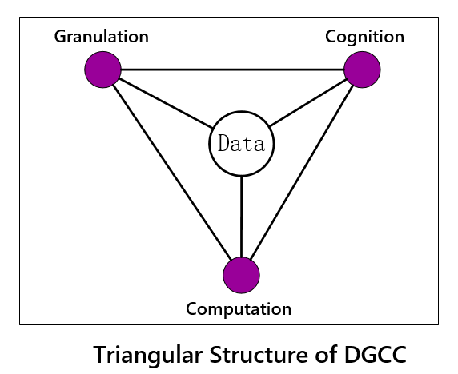

Introduction :

The 2018 International Workshop on Data-driven Granular Cognitive Computing (DGCC2018) provides a unique platform for researchers focus on granular cognitive computing, knowledge discovering and data mining from heterogeneous and autonomous information sources, to share and disseminate resent research progress.
The processing of fragmented knowledge with complex and evolving relationships from heterogeneous, autonomous information sources demands innovations in theory, algorithm and applications. Cognitive computing, inspired by human’s granularity thinking and cognition law of “global precedence”, is the third and most transformational phase in computing’s evolution, after the two distinct eras of computing—the tabulating era and the programming era. Data-driven granular cognitive computing (DGCC) has attracted extensive research recently. While statistical machine learning algorithms learn patterns with a “bottom up” style which needs huge amount of data, we human-beings cognize the world with a “global precedence” mechanism in a much more effective and efficient way. Comparing with the statistical machine learning and data mining, there is still a long way to go before we find out how human cognition works.Thus, we invite all researchers and practitioners to participate in this event and share, contribute, and discuss the emerging challenges in granular cognitive computing and knowledge engineering with complex and evolving relationships from heterogeneous, autonomous information sources.
Topics :
The major topics of interest to this workshop include but are not limited to :
- Adaptive, Complex and Evolving Systems
- Associative Memory with Forgetting
- Control of Attention
- Data Intelligence
- Discovery of Complex Vague Concepts for Initiating Actions and Plans
- Fuzzy Sets
- Heterogeneous, Autonomous Information Processing
- Human Cognition Based Computing
- Intelligent Computation Forwarding
- Intelligent Computing with Uncertainty
- Interactive Granular Computing
- Knowledge Representation
- Knowledge Space Evolution
- Learning of Interaction Rules
- Machine Learning for Cognitive Computing
- Multi Granularity Clustering
- Multiple Granularity Joint Computing
- Multiple Granularity Machine Learning
- Multiple Granularity Space
- Perception-based Computing
- Probabilistic/Stochastic Learning
- Risk Management in Interactive Granular Computing
- Rough Sets
- Theoretical Foundations of Cognitive Computing
- Variable Granularity Computing
Important Dates :
- Paper submission: August 7, 2018
- Notification of acceptance/rejection: September 4, 2018
- Camera-Ready Papers: September 15, 2018
- Conference: November 17 – 20, 2018
Submission Guidelines
Paper submissions should be limited to a maximum of ten (10) pages, in the IEEE 2-column format (link), including the bibliography and any possible appendices. Submissions longer than 10 pages will be rejected without review. All submissions will be triple-blind reviewed by the Program Committee on the basis of technical quality, relevance to scope of the conference, originality, significance, and clarity.
All manuscripts are submitted as full papers and are reviewed based on their scientific merit. The reviewing process is confidential. There is no separate abstract submission step. There are no separate industrial, application, short paper or poster tracks. Manuscripts must be submitted electronically in online submission system. We do not accept email submissions.
Accepted papers will be published in the conference proceedings by the IEEE Computer Society Press.
Organization
Program Committee
PC Chairs:
- Guoyin Wang (China), wanggy@ieee.org
- Yiyu Yao (Canada), yyao@cs.uregina.ca
- Andrzej Skowron (Poland), skowron@mimuw.edu.pl
Organizing Chair:
Zhixing Li (China), lizx@cqupt.edu.cn
PC
Davide Ciucci (Italy), ciucci@disco.unimib.it
Chris Cornelis (Spain), chriscornelis@ugr.es
Salvatore Greco (Italy), salgreco@unict.it
Manish Joshi (Japan), joshmanish@gmail.com
Tianrui Li(China), trli@swjtu.edu.cn
Pawan Lingras(Canada), pawan@cs.smu.ca
A. Mani (India), a.mani.cms@gmail.com
Sushmita Mitra(India), sushmita@isical.ac.in
Sadaaki Miyamoto (Japan), miyamoto@esys.tsukuba.ac.jp
Hung Son Nguyen (Poland), son@mimuw.edu.pl
Hiroshi Sakai (Japan), sakai@mns.kyutech.ac.jp
Roman Slowinski (Poland), roman.slowinski@cs.put.poznan.pl
Shusaku Tsumoto (Japan), tsumoto@computer.org
Ronald Yager (USA), yager@panix.com
Yanqing Zhang (USA), yzhang@cs.gsu.edu
Witold Pedrycz (Canada), wpedrycz@ualberta.ca
Shyi-Ming Chen (Taiwan), smchen@mail.ntust.edu.tw
Hamido Fujita (Japan), HFujita-799@acm.org
Henri Prade (France), prade@irit.fr
Zhixing Li (China), lizx@cqupt.edu.cn
Hong Yu (China), yuhong@cqupt.edu.cn
Qinghua Zhang (China), zhangqh@cqupt.edu.cn
Ji Xu (China), xuji1979@126.com
Changlin Xu (China), xuchlin@163.com
Yuanxia Shen (China), yuanxiashen@163.com
Lin Feng (China), mgyfl@tom.com; scfengyc@126.com
Xun Gong (China), xgong@home.swjtu.edu.cn
Jusheng Mi (China), mijsh@263.net
Duoqian Miao (China), dqmiao@tongji.edu.cn
Fan Min (China), minfanphd@163.com
Yuhua Qian (China), jinchengqyh@126.com
Xizhao Wang (China), xizhaowang@ieee.org
Ling Wei (China), wl@nwu.edu.cn
Weizhi Wu (China), wuwz@zjou.edu.cn
Jiucheng Xu (China), xjc@htu.cn
Xiaohong Zhang (China), zhangxiaohong@sust.edu.cn; zxhonghz@263.net
Yanping Zhang (China), Zhangyp2@gmail.com
Weihua Xu (China), chxuwh@gmail.com
Xibei Yang (China), zhenjiangyangxibei@163.com
Jun Zhu (China), dcszj@mail.tsinghua.edu.cn
Mihir K. Chakraborty (India), mihirc4@gmail.com
Thierry Denoeux (France), Thierry.Denoeux@hds.utc.fr
Jitender Deogun (USA), deogun@cse.unl.edu
Guenther Gediga (Germany), gediga@uni-muenster.de
Jerzy Grzymała-Busse (USA), jerzy@ku.edu
Aboul Ella Hassanien (Egypt), aboitcairo@gmail.com
Richard Jensen (UK), rkj@aber.ac.uk
Sergei Kuznetsov (Russia), skuznetsov@yandex.ru
Ernestina Menasalvas(Spain), emenasalvas@fi.upm.es
Mikhail Moshkov (Saudi Arabia), mikhail.moshkov@kaust.edu.sa
Wei Wei (China), 58513931@qq.com
Dominik Slezak (Poland), slezak@mimuw.edu.pl
Wlodzislaw Duch (Poland), wduch@is.umk.pl
Stan Matwin (Canada), stan@cs.dal.ca
Sankar Pal (India), sankarpal@yahoo.com
Pradipta Maji (India), pmaji@isical.ac.in
Romi Banerjee (India), rm.banerjee@gmail.com
Ning Zhong (Japan), zhong.ning.wici@gmail.com
Andrzej Przybyszewski (USA), Andrzej.Przybyszewski@umassmed.edu
Piotr Wasilewski (Poland), piotr@mimuw.edu.pl
Jingtao Yao (Canada), jtyao@cs.uregina.ca
Jiye Liang (China), ljy@sxu.edu.cn